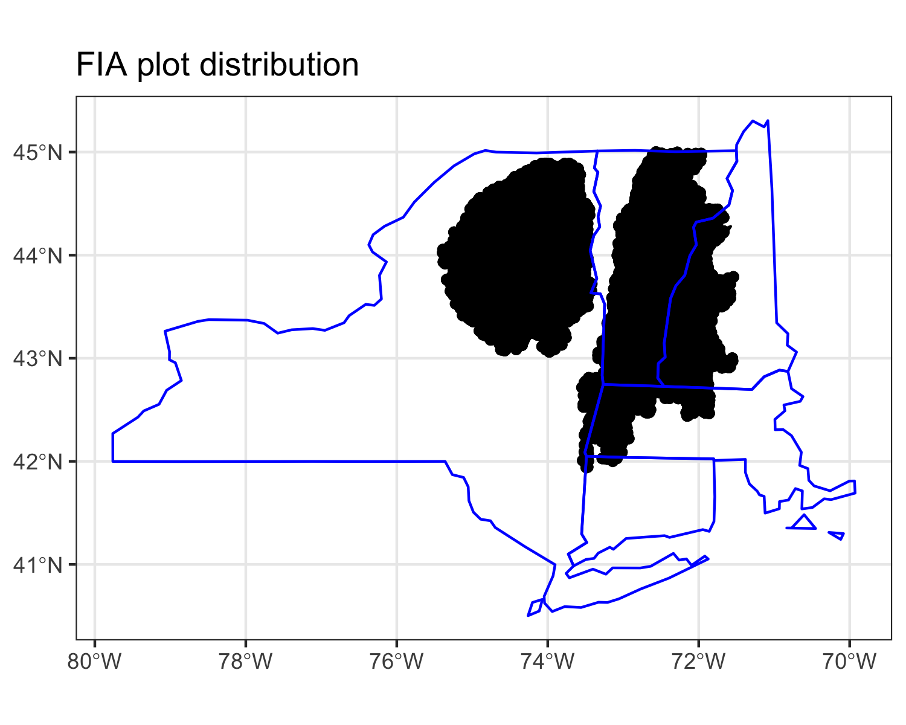
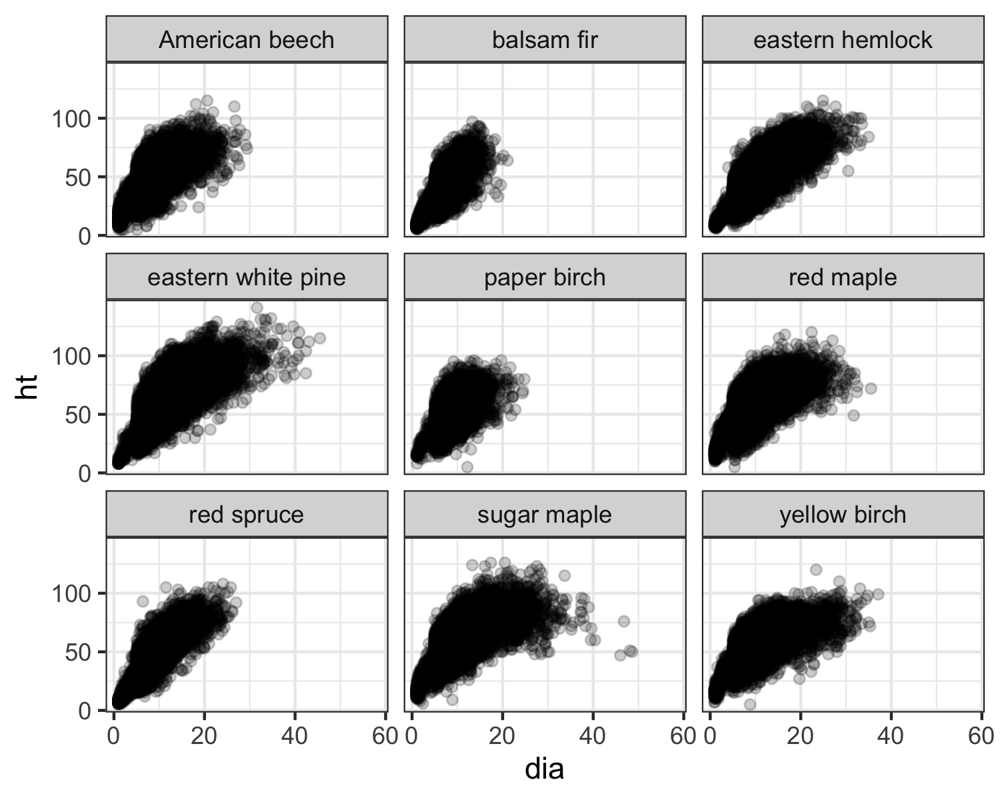
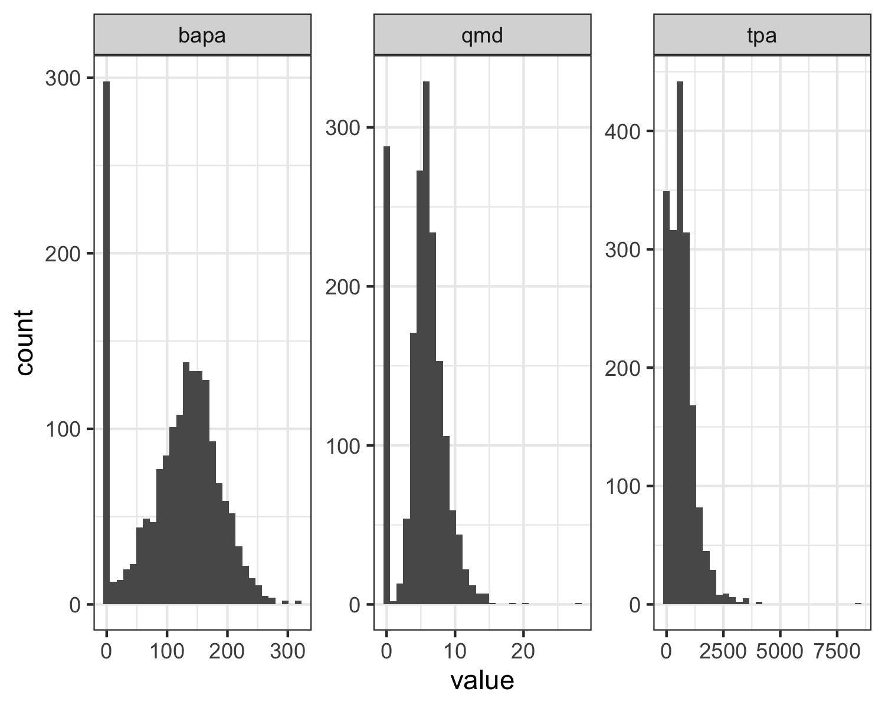
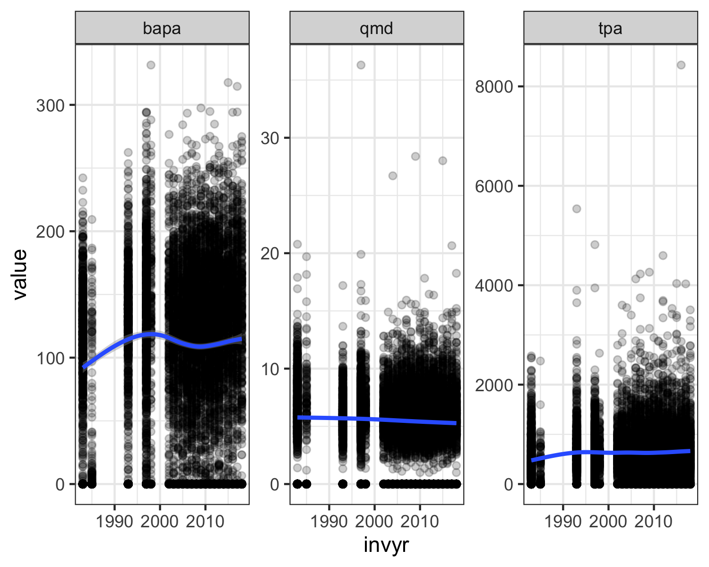
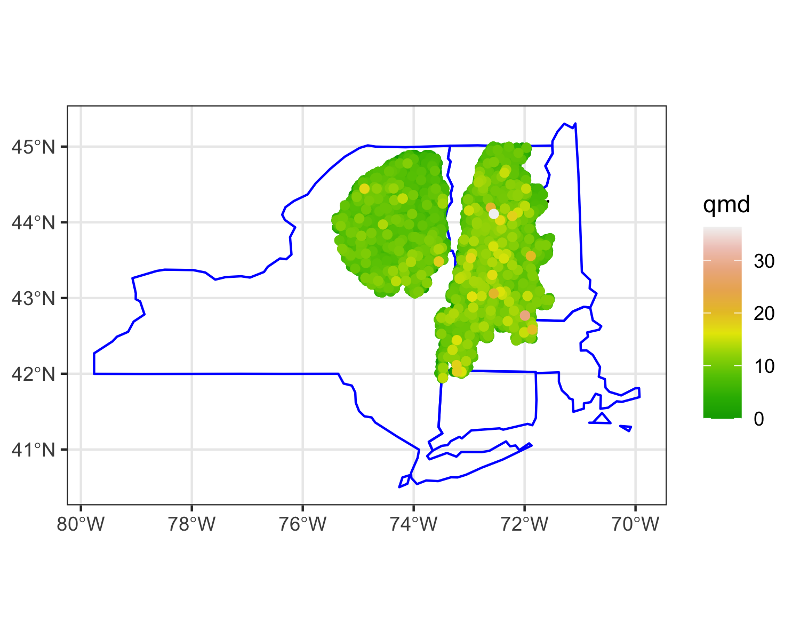

vignettes/using_tidyFIA.Rmd
using_tidyFIA.RmdThis vignette demonstrates the basic use of the tidyFIA package. The core function is tidy_fia(), which queries the FIA database by a single state abbreviation, a string of state abbreviations, or a polygonal area of interest supplied as an sf object. In this example, we will use {tidyFIA} to extract recent FIA data for the Adirondack & Green Mountains ecological supersection, which spans the states of New York and Vermont in the northeastern US.
library(dplyr) library(ggplot2) library(sf) library(tidyr) library(tidyFIA) ggplot2::theme_set(theme_bw())
First we will download the supersection shapefile and create an aoi to pass to tidyFIA.
# Download master shapefile super_zip <- file.path( tempdir(), "gis-supersection-shape-file.zip" ) super_url <- "https://www.arb.ca.gov/cc/capandtrade/protocols/usforest/2014/supersectionshapefiles/gis-supersection-shape-file.zip" download.file( url = super_url, destfile = super_zip ) unzip( zipfile = super_zip, exdir = tempdir() ) super_file <- file.path(tempdir(), "Supersections/Supersections.shp") # import and reproject to EPSG:4326 supersectionShape <- st_read(dsn = super_file) %>% st_transform(crs = 4326) %>% select(SSection, geometry)
Reading layer `Supersections' from data source `/private/var/folders/zn/hp8t93v97tl0klvbxfqvw3p80000gn/T/RtmptXn2z4/Supersections/Supersections.shp' using driver `ESRI Shapefile'
Simple feature collection with 95 features and 5 fields
geometry type: MULTIPOLYGON
dimension: XY
bbox: xmin: -2355031 ymin: 269687.9 xmax: 2257506 ymax: 3165565
CRS: 5070# filter ecoreg <- supersectionShape %>% filter(SSection == "Adirondacks & Green Mountains")
The function tidy_fia can either query a PostGIS database hosted by SilviaTerra (postgis = TRUE) or download the relevant FIA csv tables from FIADB. Querying the database is generally faster than downloading and importing the csv files. The plots are filtered down to the points within the spatial area of interest (aoi). The table_names argument can be used to specify which FIADB tables from the “Index of Tables” in the FIADB User Guide you would like to download. The imported tables are returned as a list of dataframes.
fia_data <- tidy_fia( aoi = ecoreg, postgis = TRUE, table_names = c("plot", "tree", "subplot", "cond") )
A simple map of the plot locations can be printed by calling plot(fia_data). The plot method for the tidyFIA class will generate a {ggplot2} map that can be added to other plot elements such as some nearby state boundaries to add geographic context.
p <- plot(fia_data) nearby_states <- spData::us_states %>% st_transform(st_crs(ecoreg)) %>% st_join(ecoreg) %>% filter(!is.na(SSection)) p + geom_sf( data = nearby_states, color = "blue", alpha = 0 )

The ‘tree’ table will be stored as an element in the list: fia_data[["tree"]]. This table can be used to explore tree-level attributes such as height:diameter relationships among species.
# get REF_SPECIES tables ref_species <- read_ref_table("REF_SPECIES") %>% select(spcd, common_name) # most common species common_spp <- fia_data[["tree"]] %>% group_by(spcd) %>% tally %>% top_n(9, wt = n) %>% pull(spcd) fia_data[["tree"]] %>% filter(spcd %in% common_spp) %>% left_join(ref_species) %>% ggplot(aes(x = dia, y = ht)) + geom_point(alpha = 0.2) + facet_wrap(~ common_name)

The tree-level data in the ‘tree’ table can be summarized to obtain plot-level summaries.
plot_stats <- fia_data[["tree"]] %>% group_by(plt_cn) %>% summarize( bapa = sum(tpa_unadj * 0.005454 * dia ^ 2, na.rm = TRUE), tpa = sum(tpa_unadj, na.rm = TRUE), qmd = sqrt(bapa / tpa / 0.005454) ) %>% full_join( fia_data[["plot"]] %>% select(cn, invyr), by = c("plt_cn" = "cn") ) %>% replace_na(replace = list(bapa = 0, tpa = 0, qmd = 0))
The plot-level attributes could be displayed using histograms. In this example, we are looking at the distribution of basal area per acre, trees per acre, and quadratic mean diameter in plots measured in 2014 or later.
plot_stats %>% filter(invyr >= 2014) %>% pivot_longer( cols = c("bapa", "tpa", "qmd"), names_to = "attribute", values_to = "value" ) %>% ggplot(aes(x = value)) + geom_histogram() + facet_wrap(~ attribute, scales = "free")

Distributions of plot-level observations can be plotted with respect to time (invyr).
plot_stats %>% pivot_longer( cols = c("bapa", "tpa", "qmd"), names_to = "attribute", values_to = "value" ) %>% ggplot(aes(x = invyr, y = value)) + geom_point(alpha = 0.2) + geom_smooth() + facet_wrap(~ attribute, scales = "free")

You may also be interested in plotting observations spatially.
plot_stats_spatial <- plot_stats %>% rename(geometry = geom) %>% st_as_sf() ggplot() + geom_sf( data = nearby_states, color = "blue", alpha = 0 ) + geom_sf( data = ecoreg, color = "black", alpha = 0 ) + geom_sf( data = plot_stats_spatial %>% arrange(qmd), aes(color = qmd, geometry = geometry) ) + scale_color_gradientn(colors = terrain.colors(10))
